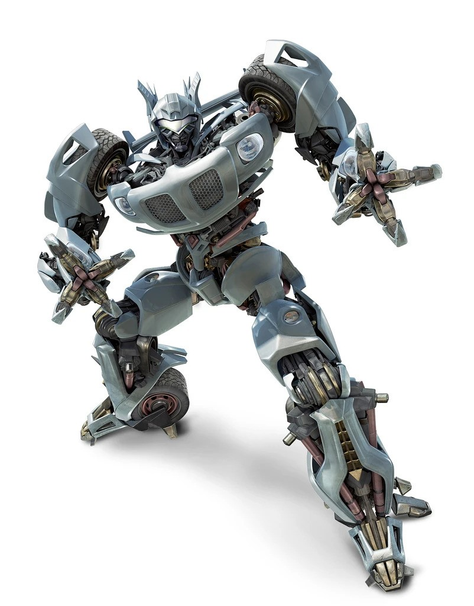
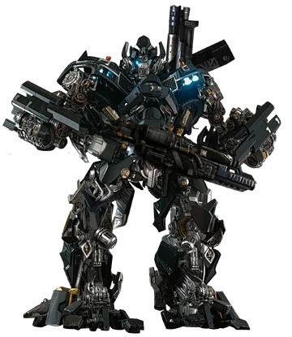
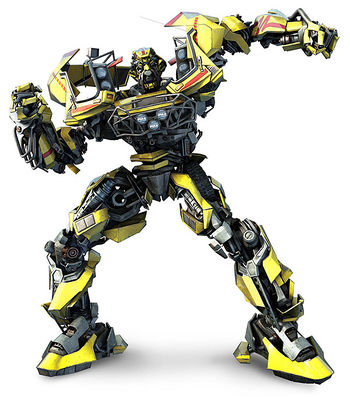
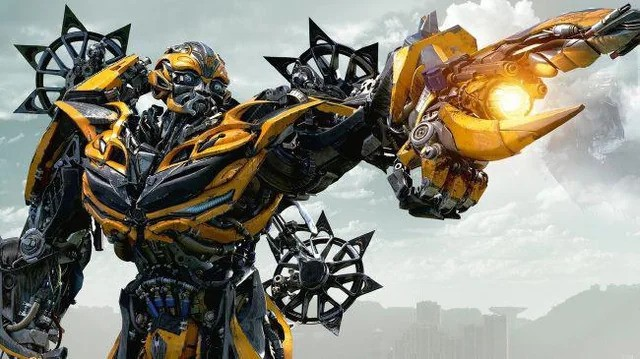
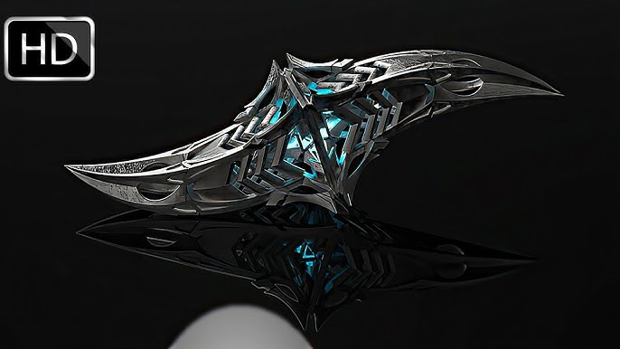

Who are the Autobots?
The Autobots are the the Heroic faction in the Transformers universe. They are sentient alien
robots from the planet Cybertron who can transform into vehicles, weapons, or machines. Long ago,
Cybertron was a thriving technological society powered by the mystical energy source known as the Allspark.
Over time, Cybertron became divided by political and social conflict. Two ideologies emerged.
* A militant faction seeking domination (later led by Megatron).
* A peaceful faction believing in freedom and coexistence
The Autobots believe in freedom, protecting life, and defending weaker beings. They are typically
portrayed as noble warriors who fight only when necessary. Thier leader is Optimus Prime, a courageous
and principled leader who guides them in their mission to defend both their homeworld and earth.
Rise of Optimus Prime
The Autbots' greatest leader is Optimus Prime. Orginally a humble data clerk named Orion Pax,
he was chosen to wield the Matrix of Leadership,
becoming the Autobots commander and symbol of hope.
Optimus Primes Philosophy:
* Freedom is the right of all sentient beings
* Protect the innocent
* Use strength only as a last resort
This moral code defines the Autobots across nearly every version of the story.
The Great War
Civil War erupted on Cybertron between the Autobots and Megatron, Leader of the Decepticons,
Forces. The war lasted millions of years and devastated the planet.
Key Events:
* Cybertron's energy reserves were depleted
* Massive battles destroyed cities and infrastructure
* Both factions searched the galaxy for new energy sources
Eventually, the conflict led both groups to Earth, where the war continued in secret.
Across the long history of the Transformers universe, there are hundreds of members of the Autobots. Different TV shows, comics, films, and toy lines introdue new characters regularly, expanding the ranks of Autobots far beyond the small core team that most audiences first encounter. Despite the constantly growing roster, a small group of Autobots appears consistently across many different versions of the franchise. These characters often serve as the backbone of the Autobot team regardless of timeline or adaptation.
| Tranformer | Vehicle | Rank | About |
|---|---|---|---|
| Optimus Prime | Semi-Truck | Autobot Leader | The noble and inspirational leader of the Autobots, known for his courage, wisdom, and dedication to protecting freedom and life. |
| IronHide | Pick-Up Truck | Weapons Specialist | Typically portrayed as the Autobots' tough, battle-hardened weapons specialist and one of Optimus Prime's most trusted soldiers. |
| Bumblebee | Sports Car | Scout | Often the youngest or most approachable Autobot, acting as a scout and forming strong bonds with humans. |
| Ratchet | Ambulance | Medic | The Autbots' skilled medic and scientist, responsible for repairing and caring for injured teammates. |
| Jazz | Luxury Sports Car | Second in Command | Optimus Prime's stylish and cool-headed second-in-command, known for his agility and strategic thinking. |
While the exact lineup of Autobots changes from series to series, these five characters frequently appear together in many versions of the story. Their roles-leader, warrior, scout, medic and lieutenant-help form the core dynamic of the Autobot team, providing a familiar foundation even as the wider Autobot ranks grow and evolve across the many generations of the Transformers universe.





